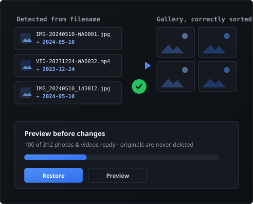

Korrigiere das Datum deiner Chat-Fotos aus dem Dateinamen.
Wenn Fotos und Videos kopiert, exportiert oder wiederhergestellt werden, sortiert deine
Galerie sie nach dem falschen Datum. DateBack liest das echte Datum aus Dateinamen wie
IMG-20240510-WA0001.jpg und schreibt es zurück – lokal, mit Vorschau und
jederzeit umkehrbar.

Warum deine Fotos in der falschen Reihenfolge erscheinen
Ein häufiger Nebeneffekt beim Wechsel zwischen Handys, Apps und Backups.
Metadaten gehen beim Kopieren verloren
Beim Kopieren, Exportieren oder Wiederherstellen fehlt das ursprüngliche Aufnahmedatum in der Datei oft oder wird ersetzt.
Die Galerie nutzt das falsche Datum
Ohne Aufnahmedatum greift die Galerie auf das Kopier- oder Änderungsdatum zurück – alte Fotos springen nach oben.
Das Datum steckt noch im Dateinamen
Viele Chat-Fotos behalten das ursprüngliche Datum im Dateinamen, auch wenn die internen Metadaten fehlen.
Genau das nutzt die App
DateBack liest das Datum aus unterstützten Dateinamen-Mustern und hilft, die korrekte Sortierung wiederherzustellen.
So funktioniert's
Fotoordner auswählen
Wähle den Ordner mit deinen Chat-Fotos oder exportierten Bildern.
Erkannte Daten ansehen
Sieh dir an, bei welchen Dateien ein Datum aus dem Dateinamen erkannt wurde – bevor etwas geändert wird.
Daten im Stapel wiederherstellen
Wende die korrigierten Daten in einem Durchgang auf deine ausgewählten Fotos an.
Funktioniert mit unterstützten Dateinamen-Mustern, bei denen ein gültiges Datum erkannt werden kann.
Das bekommst du
- Privat by Design
- Alles läuft auf deinem Gerät – kein Upload, kein Konto. DateBack braucht keinen Zugriff auf alle Dateien.
- Fotos und Videos
- Korrigiere viele Fotos und Videos auf einmal – mit echtem Datum in der Datei, nicht nur einem sichtbaren Stempel.
- Vorschau & Undo
- Prüfe die erkannten Daten, bevor etwas geschrieben wird – und mach jeden Lauf mit einem Tippen rückgängig.
- Kein Konto nötig
- Keine Registrierung, kein Login. Einfach App öffnen und loslegen.
- Kostenlos: 100 Dateien pro Tag
- Stelle jeden Tag bis zu 100 Dateien kostenlos wieder her und teste, ob es für dich funktioniert.
- Für Sortierprobleme gemacht
- Speziell für Galerie-Sortierprobleme nach Migrationen und Exporten entwickelt.
Unterstützte Dateinamen
Beispiele für Dateinamen-Muster, bei denen ein Datum meist erkannt werden kann:
- IMG-20240510-WA0001.jpg
- VID-20231224-WA0032.mp4
- IMG_20240510_143012.jpg
Unterstützte Muster können je nach App-Version variieren. Die App zeigt vor Änderungen eine Vorschau.
Ein Blick in die App
Screenshots folgen in Kürze. Die Platzhalter unten zeigen, wo sie erscheinen.
Ordner auswählen
Erkannte Daten ansehen
Im Stapel wiederherstellen
Einfache, transparente Preise
Kostenlos starten. Den vollen Stapel nur freischalten, wenn du ihn brauchst.
Kostenlos
Bis zu 100 Dateien pro Tag
- Bis zu 100 Dateien pro Tag
- Erkannte Daten als Vorschau
- Kein Konto nötig
Einmal-Pass: alles freischalten
Einmalkauf – kein Abo
- Alle Fotos und Videos in einem Lauf
- Einmalkauf, kein Abo
- Ideal für große Exporte und Handywechsel
Lieber dauerhaft? Ein optionales Jahres-Abo (2,99 €) schaltet unbegrenzte Läufe frei, solange es aktiv ist.
Deine Fotos bleiben auf deinem Gerät
Alles läuft lokal auf deinem Gerät – kein Upload, kein Konto und kein Zugriff auf alle Dateien. Deine Originale werden nie gelöscht, und jeder Lauf lässt sich rückgängig machen.
Vollständige Datenschutzerklärung lesenHäufige Fragen
Stellt das gelöschte Fotos wieder her?
Nein. Die App stellt keine gelöschten Dateien wieder her. Sie hilft nur, Datumsangaben für Dateien wiederherzustellen, die bereits auf deinem Gerät vorhanden sind.
Funktioniert es ohne Internet?
Die Kernfunktion – Daten aus Dateinamen lesen und wiederherstellen – ist für die lokale Verarbeitung auf deinem Gerät ausgelegt. Eine Internetverbindung kann für Käufe oder, falls später hinzugefügt, für optionale Werbung genutzt werden.
Verändert es meine Originaldateien?
DateBack zeigt vor jeder Änderung eine Vorschau und führt ein Undo-Protokoll – du kannst jeden Lauf rückgängig machen. Im Kopie-Modus bleiben deine Originale unberührt und es werden korrigierte Kopien gespeichert. Originale werden nie gelöscht.
Welche Dateinamen werden unterstützt?
Dateinamen, die ein erkennbares Datum enthalten, z. B. IMG-20240510-WA0001.jpg oder IMG_20240510_143012.jpg. Unterstützte Muster können je nach App-Version variieren, und die App zeigt vor Änderungen eine Vorschau.
Ist das eine offizielle WhatsApp- oder Meta-App?
Nein. Diese App ist ein unabhängiges Hilfsprogramm und steht in keiner Verbindung zu WhatsApp LLC, Meta Platforms, Inc. oder deren verbundenen Unternehmen und wird von diesen weder unterstützt noch gesponsert. „WhatsApp“ wird nur erwähnt, um die Art der Dateinamen zu beschreiben, mit denen die App arbeiten kann.
Warum sind 100 Dateien pro Tag kostenlos?
Kostenlos kannst du jeden Tag bis zu 100 Dateien wiederherstellen und prüfen, ob DateBack für deine Dateien funktioniert, bevor du kaufst. Ein Einmal-Pass (3,49 €) schaltet einen kompletten Lauf ohne Limit frei; ein Jahres-Abo (2,99 €) hebt das Limit dauerhaft auf, solange es aktiv ist.